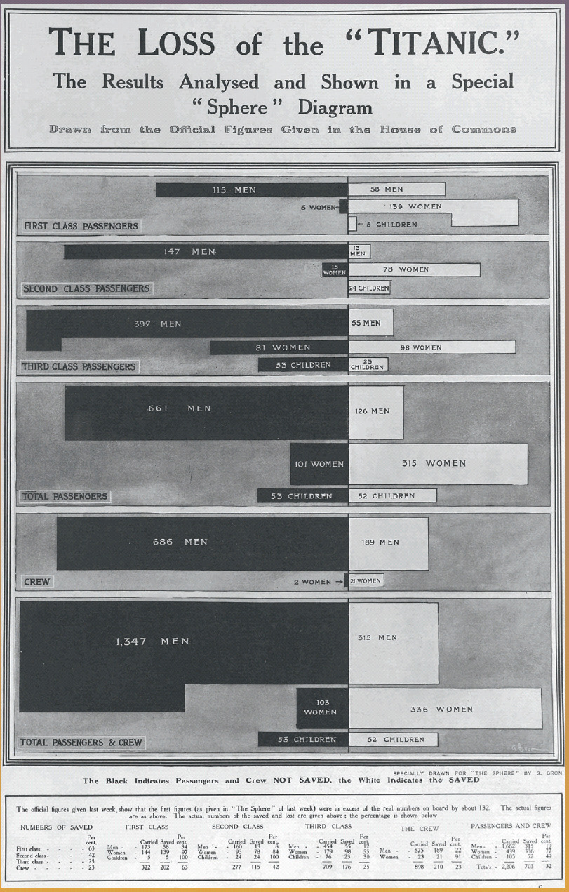
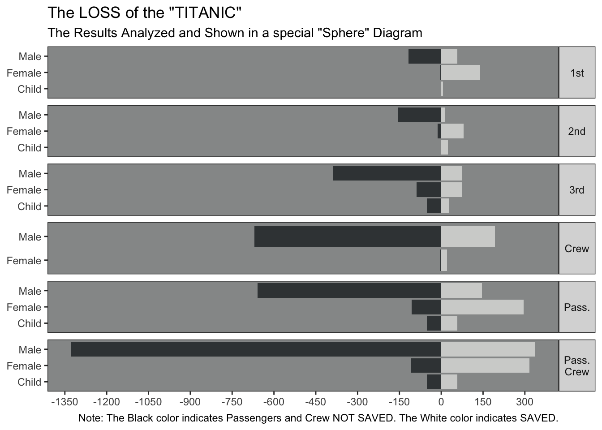

Background
In the February 2019 issue of Significance Magazine notably featured a story of the titanic disaster (Friendly, Symanzik, and Onder 2019) and visualization of key survival statistics. As a fan of R and data visualization I enjoyed this article and recommended it to anyone with similar interests. Although the subject is rather tragic, by reading the article I did get a better appreciation of how the information of the crash survivorship was conveyed to the general public through data visualization.
Reproducibility Challenge
Of particular note in the article was the following data visualization poster printed shortly after the tragedy:

I found this to be a very cool data visualization of the survivorship by class, gender, and adulthood. As a statistics graduate student, I care a lot about reproducibility of results not only as a basic check, but to really appreciate the results and more importantly any implicit assumptions behind the results. So this led to the following goal and effectively this blogpost:
Goal: Given the same Titanic survivors data could we recreate a similar looking chart using R and specifically the tidyverse set of tools?
Collecting and cleaning the data
First let’s begin by loading our required data cleaning and plotting packages. First we will load the required libraries needed for the analysis.
In the article the authors cite several resources for collecting the data for this task. Per the article we note that the data is already pre-baked into R and located in datasets::Titanic when R loads, which is convenient 😎.
We can source the data and start cleaning it for our exploration, using the handy clean_names function for column name cleaning and converting various categorical variables (age, sex, survivorship, and passenger class) to factors for easy plotting later.
# Basic cleaning of names and filtering out non-zero counts
t1 <- datasets::Titanic %>%
as_tibble() %>%
clean_names(dat = .) %>%
filter(.data = ., n != 0) %>%
mutate(.data = .,
new_sex = ifelse(age == "Child", age, sex),
n_sgnd = ifelse(survived == "No", -1*n, n)) %>%
select(class, new_sex, survived, n_sgnd)
# Passenger (non-crew) level aggregation
t2 <- t1 %>%
filter(class != "Crew") %>%
mutate(class = "Pass.") %>%
group_by(class, new_sex, survived) %>%
summarize(n_sgnd = sum(n_sgnd))`summarise()` has grouped output by 'class', 'new_sex'. You can override using
the `.groups` argument.# Crew (non-passenger) level aggregation
t3 <- t1 %>%
mutate(class = "Pass.\nCrew") %>%
group_by(class, new_sex, survived) %>%
summarize(n_sgnd = sum(n_sgnd))`summarise()` has grouped output by 'class', 'new_sex'. You can override using
the `.groups` argument.# Combined cleaned plotting dataset
ttnc_cln <- t1 %>%
bind_rows(t2) %>%
bind_rows(t3) %>%
mutate(.data = .,
class = as.factor(class),
new_sex = as.factor(new_sex),
survived = as.factor(survived))
# Display first 8 rows in a nice centered table
ttnc_cln %>%
slice(.data = ., 1:8) %>%
kable(x = ., align = 'c')| class | new_sex | survived | n_sgnd |
|---|---|---|---|
| 3rd | Child | No | -35 |
| 3rd | Child | No | -17 |
| 1st | Male | No | -118 |
| 2nd | Male | No | -154 |
| 3rd | Male | No | -387 |
| Crew | Male | No | -670 |
| 1st | Female | No | -4 |
| 2nd | Female | No | -13 |
Looks nice. As you can see, the data cleaning was done in stages where 3 datasets t1, t2, t3 were built up. Essentially by staring at the plot it is clear that plots are split by class i.e. \(1^{st}\) Class, \(2^{nd}\) Class etc. This is the cleaned t1 data frame. However there are aggregate versions of these classes at combined Passenger level and Passenger and Crew level which are the t2 and t3 tibbles respectively. Finally we concatenate them together into ttnc_cln and ensure our categorical variables are cast as factors.
Next step - plotting!
Plotting the Data
The main chart object is a barplot by sex and adult status and faceted by passenger class i.e. first class, second class etc. Great, let’s do it!
out_plot <- ttnc_cln %>%
ggplot(data = .,
aes(x = new_sex, y = n_sgnd, fill = survived)) +
geom_bar(stat = "identity") +
facet_wrap(~ class, ncol = 1,
strip.position = "right",
scales = "free_y") +
coord_flip() +
scale_fill_manual(values=c("#3C4144", "#D2D3D1")) +
theme_bw() +
theme(panel.background = element_rect(fill = "#969898"),
panel.grid.major = element_blank(),
panel.grid.minor = element_blank(),
axis.title.x = element_blank(),
axis.title.y = element_blank(),
strip.text.y = element_text(angle = 360),
legend.position = "none") +
scale_y_continuous(breaks=seq(-1500,600,150)) +
labs(title = 'The LOSS of the "TITANIC"',
subtitle = glue::glue("The Results Analyzed and Shown",
'in a special "Sphere" Diagram',
.sep = " "),
caption = glue::glue("Note: The Black color indicates",
"Passengers and Crew NOT SAVED.",
"The White color indicates SAVED.",
.sep = " "))
out_plot
Conclusion
- Overall looks like the plot was able to be reproduced to a decent level of accuracy
- To get the colors to be close to the plot, I simply opened the article online and used the Colorzilla for Chrome addin to select the color manually. This is a really nice tool to use for reproducing colors viewed through a browser
- I don’t quite like that the non-survivors here are shown on a negative scale, but this was the quick hack I could perform to get bars flipped for non-survivors vs. survivors
-
Summary: Overall this was a really fun challenge and I learned a lot about old-school data visualization using the glorius modern
tidyverseecosystem we have at our fingertips. Will do a similar reproducibility challenge again for sure ✌️. Have fun playing around with the above and please post in the comments any questions/feedback you may have 👍.
Acknowledgments
I’d like to thank Salil Shrotriya for creating the preview image for this post. The hex sticker png files were sourced from here.
References
Reuse
Citation
@online{shrotriya2019,
author = {Shamindra Shrotriya},
title = {Reproducibility {Challenge:} {Titanic} {Survivors} {Plot}},
date = {2019-07-21},
url = {https://www.shamindras.com/posts/2019-07-21-shrotriya2019reprtitanic},
langid = {en}
}